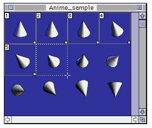
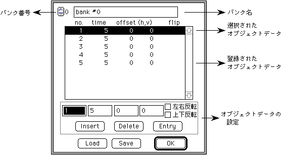
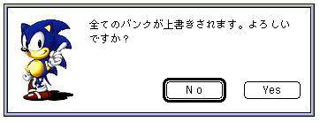
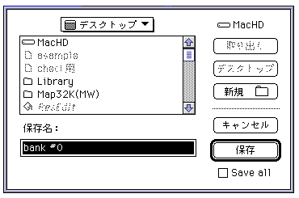
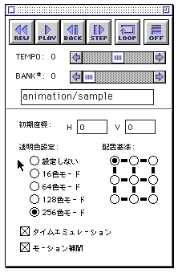
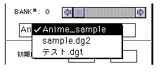
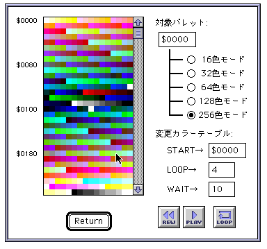

★Graphic Tools Guide
★セガペインタユーザーズマニュアル/
★Graphic Tools Guide
★セガペインタユーザーズマニュアル/
注 意 |
ターゲットが未接続の場合、アニメーション機能を使用することはできません。 また、Model-S グラフィックスボックスを接続している場合、アニメーション実行中に描画操作を行うことはできません。 |
|---|







★Graphic Tools Guide
★セガペインタユーザーズマニュアル/